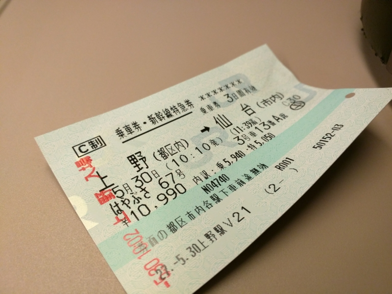
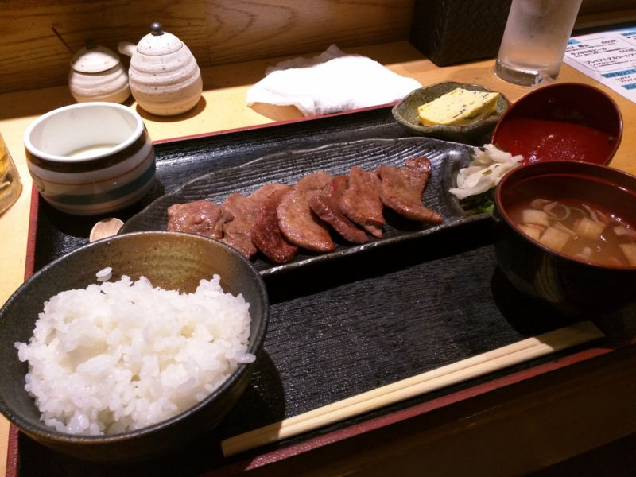
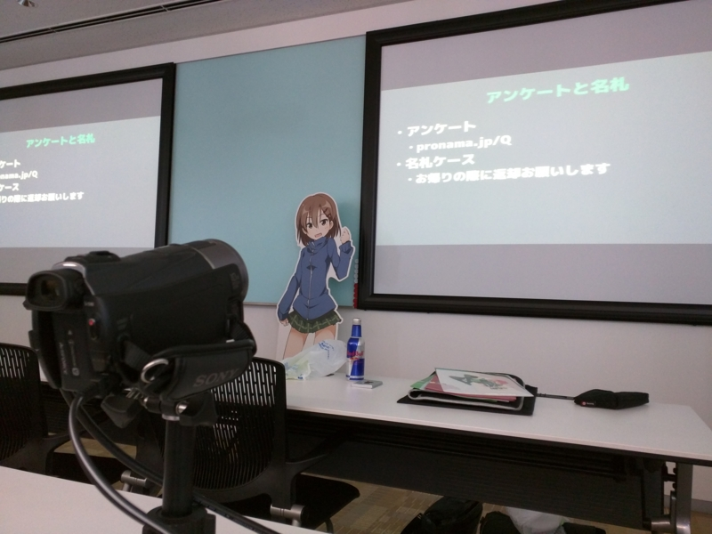
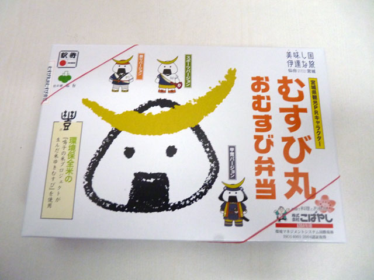
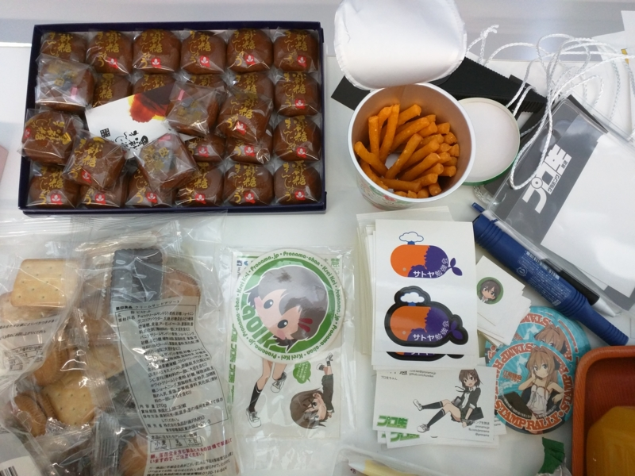
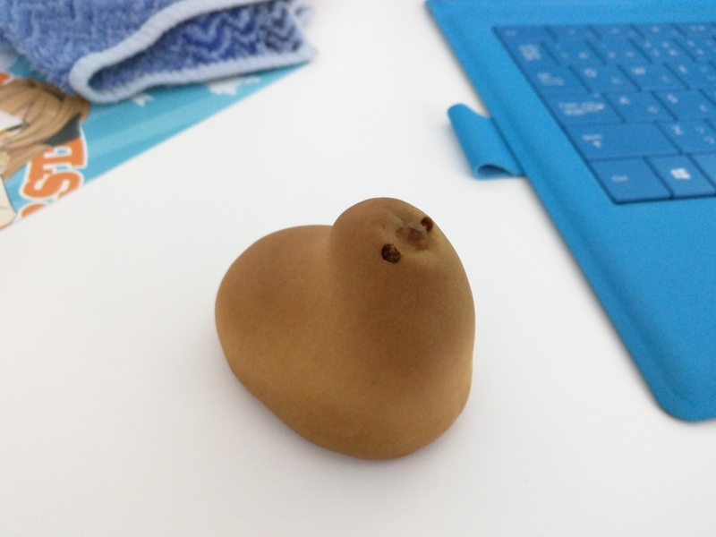
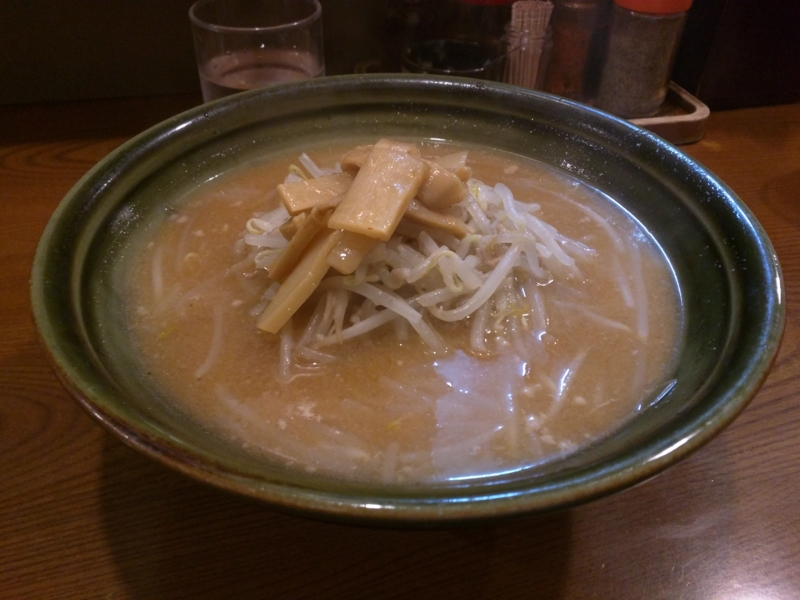

サトヤ+プロ生勉強会＠マイクロソフト東北支店 に参加してきたった #satoya #pronama
公開日：

5月30日に仙台で開催された サトヤ+プロ生勉強会＠マイクロソフト東北支店 に参加してきました。
松山から仙台へ行くために、まず東京へでる。 - だるろぐ で研究したところ、行きは ジェットスター（松山 → 成田）＋東北新幹線（上野 → 仙台）が最適だったようなので、実家（千葉県市川市）に木曜の晩から2泊してゆるゆる過ごし、土曜日の朝、のんびり家から京成線にのって上野へでました。
仙台駅でうんこしながら、何食うか考えてる
— だるやなぎ に天使が舞い降りた！ (@daruyanagi) 2015年5月30日
はやぶさに乗ったら、あっという間に仙台。ほんとは駅ビルのおいしそうなお寿司屋さんでお昼ご飯を食べたかったのだけど、マイクロソフト東北支店へ行くのは初めてなので、どこら辺にあるのか先にちゃんと偵察してから、近所の適当な居酒屋さんでランチをいただきました。

らんち (@ 彩のごとく in 仙台市, 宮城県) https://t.co/AWGZ8DeI8X
— だるやなぎ に天使が舞い降りた！ (@daruyanagi) 2015年5月30日
カウンターに二人掛けのソファー。もちろん僕はひとりで占領です。夜はカップルでイチャイチャしながらお酒を飲む店なんだろうなぁ。「利休」みたいな有名店じゃないけど、とりあえずこれで牛タンノルマは達成。胃袋のなかで踊る牛タンを抑えながら、小走りで会場へ向かいます。

以下、簡単なセッションの感想（この順番じゃなかった気がしたけど、よく覚えてないし、まぁ、多少の順不同はイイじゃろ）。
セッション1 「Windows 10 で変わる Windows ストアアプリのつくりかた」
出張帰りで瀕死のつもりん（@tmyt）が、Build 2015 で明らかになった、新しいストアアプリの作り方を紹介。
つもりんが「Aristea」で荒稼ぎした金額を聞くとちょっとやる気がそがれてしまうのですが、日本でも Windows Phone が再上陸するらしいし、1本ぐらいは頑張ってアプリを作ると思います。
セッション2 「Azure ML を使って何かやる」
“おじさん”の愛称で知られるぼんぷろ君（@bonprosoft）と山口さん（@quintia）が、Azure ML でクマの出没マップを作るみたいな話。Azure ML の ML って「機械学習（Machine Learning）」の略なんだね（そこからかよ！！）。
正直、わしにはよくわからんところが多かったけれど、GUI でノードをリンクで繋げてパラメーターをいろいろぶち込むだけでサクッと機械学習に触れられるというのは割とすごいかも。
セッション3 “de:code 2015” イベント レポート
Microsoft の舟越さんによる“de:code 2015”のレポート。ちなみに、僕はお金がなくていけませんでした。参加費（68,000円）はどうにかなっても、交通費・宿泊費・交際費、そして仕事を休んで収入が絶えることを勘案すると、毎年の参加はしんどいなぁ。こういうとき、有給休暇のある身分の人が羨ましい。
“de:code 2015”の裏側の紹介なんかも興味深かったけど、個人的にはエヴァジェリストチームの組織図が面白かったかも。あぁ、あそこがエウーゴなのね、的なｗ
セッション4 渚の妖精ぎばさちゃんとエンジニアのための損しないトーク技術
僕は存じ上げていなかったのだけど、東北から面白いことを発信しまくってる小泉勝志郎さん（@koi_zoom1）による、ぎばさちゃんの紹介コミュ障エンジニアへの処方箋。
「とりあえず天気の話をしろ」という教えのおかげで、懇親会がいつも以上に盛り上がってよかったです。でも、天気の話以外もしような！？ あと、女の子とのしゃべり方のフローチャートはぜひ完成させてほしい。ノーベル賞ものだと思う。
ぎばさちゃんでチャリンチャリンビジネスにも挑戦してみたいですね。まぁ、今回は 東北ずん子 以外にも、東北にはかわいいキャラがいるというのが収穫でした。個人的には おにぎりまん みたいな奴が一番気に入っているのですけど。

口から梅干しが出てくるキーホルダーを愛用しています。
ライトニングトーク
ぶつかり力の話とか、キーワードの綴りで色が変わるコードハイライトとかどうよ的な話（紛らわしい単語が見分けやすかったり Grep の結果が見やすい）とか、Code Contract（コードに引数などのルールをもたせ、静的にチェックする）とか、VB6 がなかなか死なないとか、そういう話。
不肖、だるやなぎも「ソフトウェアのバージョンナンバーについて」みたいな感じの LT をやらせてもらいました。ちょっと緊張しちゃって、死にたいです。
そのほかのどうでもいいこと

今回は参加費無料で、代わりにおやつを持ち寄るキマリでした。おかげでいろんなおやつが食べられてうれしかったです。

自分は“ひよこ饅頭”をもって行きました。松山からもって行ったお土産を小岩で全部配ってしまったので東京でお土産を買いなおす羽目になったせいですが、自分自身、久しぶりに食いたかったので。頭から食うと美味しいですネ。
たまひゅん pic.twitter.com/QlGIluIBSy
— だるやなぎ に天使が舞い降りた！ (@daruyanagi) 2015年5月30日
あと、ビルが割と高くて、下を見るのがちょっと怖かったかも。

懇親会は……何話したっけ、忘れちゃった。でも割と盛り上がりましたね。途中で関東方面でとても大きな地震があったらしいですが、仙台は電球がグルグル回ってるだけで「ぶへへへｗｗｗ 電球ｗｗｗ 回ってるｗｗｗ」みたいな感じだったと思います。あとは仙石線の全通をお祝いしてきました。そのあとは3次会ぐらいまでやって（途中でぼんぷろ君がほとんど撃沈）、最後はラーメンで〆。ラーメンなんか食べるの久しぶりでしたが、かなり美味しかったです。
I'm at 味よし 国分町本店 in 仙台市, 宮城県 w/ @jz5 https://t.co/xkG0CEyccg
— だるやなぎ に天使が舞い降りた！ (@daruyanagi) 2015年5月30日
日付越えてた……orz